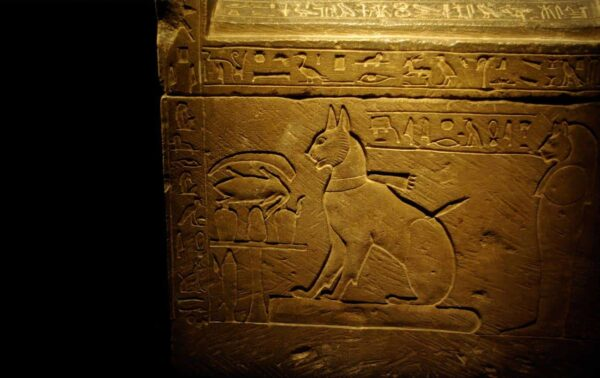

Mais de trinta milhões de animais estão abandonados nas ruas do Brasil!
Desses trinta milhões, dez mihões são os gatos...
Você ONG, coloque aqui os gatos para serem doados enquanto usuários possam adotar eles!
A primeira associação dos gatos com humanos da qual se tem evidência ocorreu há cerca de 10 mil anos!
